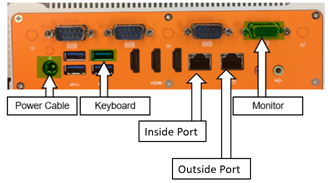
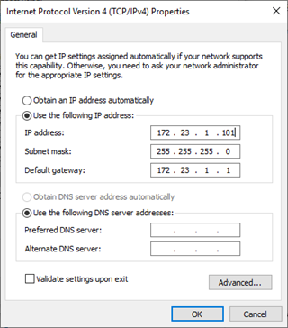
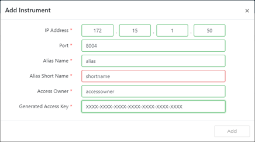

Panther Fails to Join Dashboard Command Server
Error Code
No error code.
Complaint Description
When attempting to join a Panther Link system to a Dashboard Command server, the Dashboard Command Server reports Failed to add Instrument: Could not communicate.
Technical Support
Verify Physical Connectivity of Network Devices
There could be a bad ethernet cable, or the network devices are not correctly plugged into the appropriate network device, or that the network devices are off.
Resolution:
Check Network Device Connectivity:
- Verify that the Panther is properly plugged into the next network device.
- If the Panther is plugged into a switch, verify that the Panther is connected to the switch on ports 1-16. Look for the presence of link lights on either the switch or the Panther.

Figure 1: Example of Network Interface Card Link Lights
- If the Panther is plugged into a firewall, verify that the Panther is connected on ports 1-7 (5505) or 8 (5506-X). Look for the presence of link lights on either the firewall or the Panther.
- If the Panther is plugged into a switch, verify that the Panther is connected to the switch on ports 1-16. Look for the presence of link lights on either the switch or the Panther.
- If applicable, verify the switch is plugged into the firewall on port 8 of the 5506-X. Look for the presence of link lights on either the firewall or the switch.
- Verify the firewall is plugged into the customer wall port on port 1 of the 5506-X. Look for the presence of link lights on the firewall.
- Verify the Outside Port of the Dashboard Command server is plugged into port 2 of the 5506-X. Look for the presence of link lights on either the Dashboard or the firewall.

Test:
Retry Adding Panther System to Dashboard Command
Field Service
Verify/Re-Generate Access Key
The procedure to join a Dashboard Command server to an instrument requires the generation of a 28-character API key on the Panther System Software. Due to its length, it is susceptible to incorrect input.
Resolution:
Verify the Key
Examine the given key and re-input it into the Dashboard Command “Add Instrument” function. If the key is no longer available, revoke the key and generate a new key in the same “Manage Remote Data Access” screen on the Panther system.
Test:
Retry Adding Panther System to Dashboard Command.
Check IP Addresses to be Configured (Panther-side)
The Panther NIC may not have been correctly configured with the proper IP address. This may result in the Cisco firewall not being able to route traffic requests appropriately. When configuring the firewall via Firewall Wizard, an instructions.txt file is generated. This file contains all IP addressing information to be configured on both the Panther and the Dashboard Server.
Resolution:
Configure or validate the Panther IP address into the NIC:
- At the Panther Command Prompt, type “control ncpa.cpl”.
- Right-click on the NIC and click “Properties.”
- Click on Internet Protocol Version 4 (TCP/IPv4) and click “Properties”.
- The Panther will likely be configured on the 172.23.n.x network, where
n=1-10, which defines the firewall on the internal Panther network
x=101-116, depending on the # of the Panther on the network
- The subnet mask should be 255.255.255.0.
- The gateway will likely be 172.23.n.1.


Note—The above photo is for reference only! Please use the instructions.txt file to definitively identify what the IP address should be.
Test:
Retry Adding Panther System to Dashboard Command.
Check IP Addresses to be Configured (Dashboard-side)
When adding a Panther system on the Dashboard Command server, the IP and port to be added is supposed to be on the De-Militarized Zone (DMZ) network and is defined in the instructions.txt file.
Resolution:
Configure or validate the IP address being added to the Dashboard Command:
- From the Dashboard Command Server, click the Menu bottom (top-right).
- Click on “Administration.”
- On the left navigation bar, click “Instruments.”
- The Panther IP will be either 172.15.1.50, or in instances where there are multiple Cisco firewalls, a static NAT IP.
- The port will range between 8001-8016.
Note—The below photo is for reference only! For steps 4 and 5, please use the instructions.txt file to definitively identify what the IP address should be. 
Test:
Retry Adding Panther System to Dashboard Command.
Validate and Upgrade Dashboard Command Server Software (as needed)
It is possible that newer versions of Panther System SW are incompatible with older versions of Dashboard Command SW. If none of the above troubleshooting works, software compatibility may be the issue.
Resolution:
Upgrade Dashboard Command Server to Current SW Version.
Validate the SW Version of the Dashboard Command Server by going to the Menu > About screen. If it is not the most up-to-date version, use the following steps to update the Dashboard Command SW.
- Navigate to Menu > System.
- One of the tiles is ‘Update Application’. Use this to upload the .gpz file of the most recent Dashboard Command Software.
Test:
Retry Adding Panther System to Dashboard Command.
Multiple Firewalls?
Using multiple Cisco firewalls increases the complexity of the Panther Link system. Several iterations of checking configurations on each Panther System, each Switch, and each Cisco firewall must take place, including the possible configuration of a VPN. Due to the added complexity, please contact USTSESupport when all of the above efforts have been exhausted.
Resolution:
Contact USTSESupport for additional support.
Test:
TBD.
 button at the top of the page to send feedback, comments, or change requests.
button at the top of the page to send feedback, comments, or change requests.